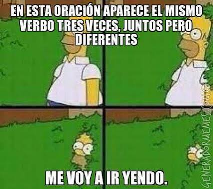

Verbo
• Definición propia: Es el motor de la oración. Es la palabra que nos cuenta qué acción se está haciendo, qué proceso ocurre o en qué estado se encuentra alguien.
• Banco de palabras: Descargar, programar, borrar, conectar, hacer clic.
• Oración de aplicación: El equipo de soporte actualizará los servidores a la medianoche.
